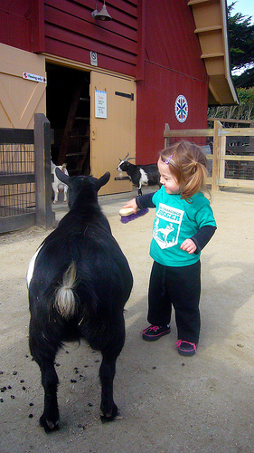
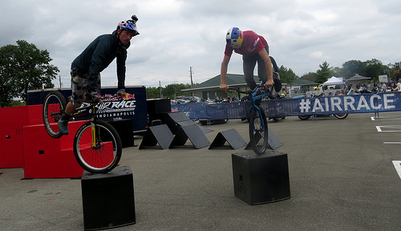
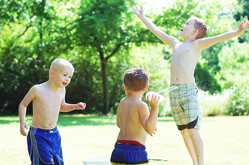
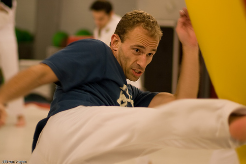
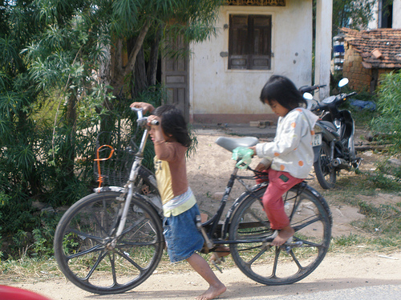
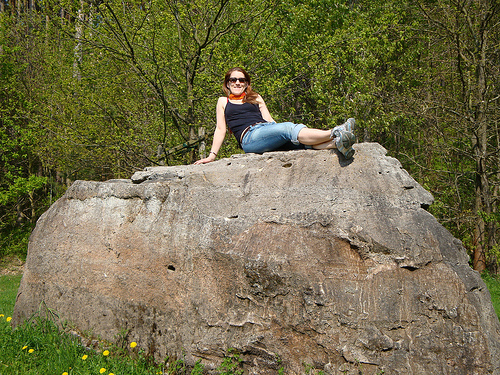
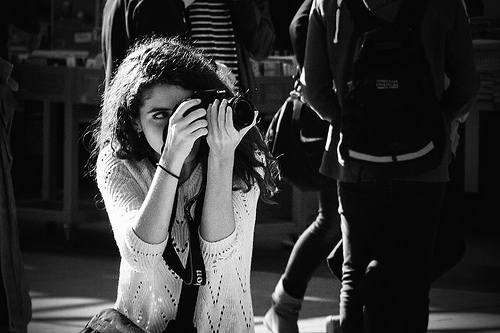
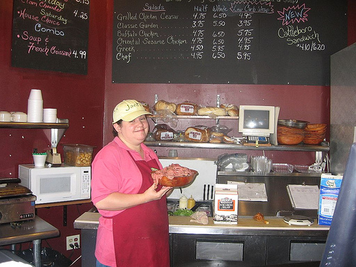
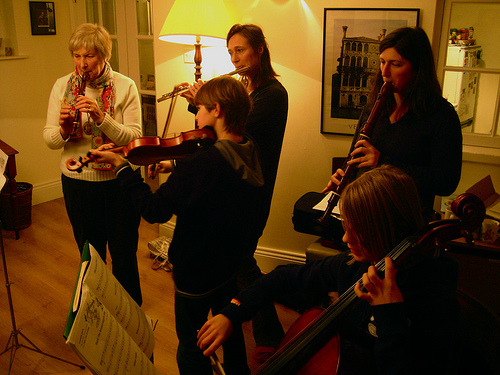
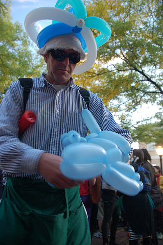

Textless Speech-to-Speech Translation (S2ST) aims to translate speech from the source language into speech in the target language without relying on or generating text in either the source or target language. However, in noisy environments, the speech modality may sometimes lose certain acoustic or semantic information, resulting in translation errors. By introducing scene images that describe the source language context as a visual modality, which compensates for the distorted semantic information in the speech modality, we can effectively enhance the model's ability of speech translation. Therefore, we propose a multimodal S2ST model, named VisualTrans, integrating the visual modality into speech to improve speech translation performance. To address the challenge of fusing speech and visual modalities, we introduce the M-Fusion module, which is designed to align speech features and visual features in the scene images that are described in the speech. This module injects additional visual information into the speech modality, thereby assisting in speech translation. Experimental results demonstrate that VisualTrans outperforms S2ST models with an average improvement of 1.04 BLEU points. Moreover, it exhibits more stable performance in noisy environments and demonstrates higher tolerance to noisy data.
| source | target | S2T+TTS | ASR+NMT+TTS | textless S2UT | textless S2UT+M-Fusion | wav2vec2 S2UT | wav2vec2 S2UT+cross_attention | M-Transpeech | |
|---|---|---|---|---|---|---|---|---|---|
| Sample 1 |  | ||||||||
| Reference | a young girl is trying to brush a goat. | une jeune fille essaie de brosser une chevre | |||||||
| ASR | une jeune fille essaye de brosser une chvre une chevre | une jeune fille essaie de brosser une jeune fille essaie de brosser une chate | une jeune fille essayant de grocher un bateau | une jeune fille tente de frapper une brosse de buisseau | une jeune fille tente de brosser un chaviot | une jeune fille tente de brosser une brosse | une jeune fille essaie de brosser une chevre | ||
| Sample 2 |  | ||||||||
| Reference | two men performing bicycle tricks on blocks. | deux hommes faisant des figures en velo sur des blocs | |||||||
| ASR | deux hommes faisant des tours de velo sur des pates de maison | deux hommes effectuent des essais de bicyclette sur des plaques | deux hommes fond de la moutou en train de faire des blocs | deux hommes effectuent des figures sur des blocs de benis | deux hommes faisant des figures en velo sur des boisseaux | deux hommes faisant du velo sur des blos | deux hommes faisant des figures en velo sur des blocs | ||
| Sample 3 | |||||||||
| Reference | trees are in front of a large mountain. | des arbres sont devant une grande montagne | |||||||
| ASR | les arbres sont devant une grande mbiomebre sont devant une grande montagne | les arbres se trouvent en face d'une grande montagne | trois agents sont sur une grande montagne | trois hommes sont devant une grande montagne | des arbes sont devant une grande montagne | des arbres devant une grande montagne | des arbres sont devant une grande montagne |
| source | target | S2T+TTS | ASR+NMT+TTS | textless S2UT | textless S2UT+M-Fusion | wav2vec2 S2UT | wav2vec2 S2UT+cross_attention | M-Transpeech | |
|---|---|---|---|---|---|---|---|---|---|
| Sample 1 |  | ||||||||
| Reference | three boys are playing with sponges and buckets of water. | tres ninos estan jugando con esponjas y cubos de agua | |||||||
| ASR | tres chicos estan jugando con esponjas y baldosas de agua | tres ninos estan jugando con espongas y buques de agua habia | tres ninos estan jugando con cuvos y cubiertas de agua | tres ninos estan jugando con ropa de cubos y agua | tres ninos estan jugando computadoras y cuevos del agua | tres ninos estan jugando con pollas y bubes de agua | tres ninos estan jugando con esponjas y cubos de agua | ||
| Sample 2 |  | ||||||||
| Reference | a man in white pants and a blue shirt is kicking a yellow boxing bag. | un hombre con pantalones blancos y una camisa azul esta pateando una bolsa de boxeo amarilla | |||||||
| ASR | un hombre en pantalones blancos y una camisa azul esta tomando una caja amarilla de papa | un hombre en pantalons blancos y una mercancia azul esta pechando una bolsa de caja azul | un hombre con pantalones blanco y una camisa azul esta pateando una bolsa amarilla | un hombre con pantalones blancos y una camisa azul esta pateando una bolsa de bloque | un hombre con pantalones blancos y una camisa azul eszapateando una bolsa de botella amarilla | un hombre con pantalones blancos y una camisa azul esta pateando una bolsa de boxe amarilla | un hombre con pantalones blancos y una camisa azul esta pateando una bolsa de boxeo amarilla | ||
| Sample 3 | |||||||||
| Reference | two ladies and three men looking at the ocean. | dos damas y tres hombres mirando el oceano | |||||||
| ASR | dos mujeres y tres hombres miran al oceano | el comite recomienda al estado parte que adopte todas las medidas necesarias para garantizar la igualdad entre los generos y el empoderamiento de la mujer | dos senoras y tres hombres mirando al aciano | dos senoras y tres hombres mirando el oceano | dos senoras y tres hombres mirando el ociano | dos senoras y tres hombres mirando el ociano | dos damas y tres hombres mirando el oceano |
| source | target | S2T+TTS | ASR+NMT+TTS | textless S2UT | textless S2UT+M-Fusion | wav2vec2 S2UT | wav2vec2 S2UT+cross_attention | M-Transpeech | |
|---|---|---|---|---|---|---|---|---|---|
| Sample 1 |  | ||||||||
| Reference | deux enfants jouent sur un vélo. | two children are playing on a bicycle | |||||||
| ASR | two children i en i we be bike | to children a source abides | two children are playing on a bike | two children are playing on a bag | two children play on a bicycle | two children are playing on a bag | two children are playing on a bicycle | ||
| Sample 2 |  | ||||||||
| Reference | une femme assise sur un très gros rocher , souriant pour la photo avec des arbres en arrière-plan. | a woman sitting on a very large rock smiling at the camera with trees in the background | |||||||
| ASR | a woman seated on a large rock would be smiling for the picture of trees in the background | a woman sitting on a very large cheek smiling from the fire with trees in the background | a lady sitting in a rock smiling at the camera smiling in the background | a woman sitting on a very large rock smiling to the camera with trees in the background | a woman sitting ot a very large rock smiling for the camera with trees in the background | a woman sitting on a large rock smiling to the camera with the camera in the background | a woman sitting on a very large rock smiling at the camera with trees in the background | ||
| Sample 3 |  | ||||||||
| Reference | une femme en pull blanc prend une photo d' une personne. | a woman in a white sweater is taking a picture of a person | |||||||
| ASR | the white woman takes a picture in a person | a woman in a blanket takes a picture of a person | a woman in a white shirt is taking a picture of a person | a woman in a white shirt takes a picture of a person | a woman in a white shirt takes a picture of a person | a woman in a white shirt is taking a picture of a person | a woman in a white sweater is taking a picture of a person |
| source | target | S2T+TTS | ASR+NMT+TTS | textless S2UT | textless S2UT+M-Fusion | wav2vec2 S2UT | wav2vec2 S2UT+cross_attention | M-Transpeech | |
|---|---|---|---|---|---|---|---|---|---|
| Sample 1 |  | ||||||||
| Reference | Una mujer sosteniendo un tazón de comida en una cocina. | a woman holding a bowl of food in a kitchen | |||||||
| ASR | i will not continue to have frut peel in a kitchen | the committee recommends that the state part | a woman holding a counter in a kitchen | a woman holding a meal in a kitchen | a woman holding a bowling foot in a kitchen | a woman holding a bull in a kitchen | a woman holding a bowl of food in a kitchen | ||
| Sample 2 |  | ||||||||
| Reference | Un grupo de mujeres están tocando instrumentos musicales juntas. | a group of women are playing musical instruments together | |||||||
| ASR | the group of women even changing musical instruments together | the committee recommends that the state pa necessary measures to insure the thum | a group of women are playing musical instruments | a group of women are playing musical instruments | a group of women are playing musical instruments | a group of women are playing musical instruments | a group of women are playing musical instruments together | ||
| Sample 3 |  | ||||||||
| Reference | Un hombre con un sombrero de globo hace animales de globo. | a man with a balloon hat makes balloon animals | |||||||
| ASR | a man with a head overwelmed for wos | the committee recommends that the state party | a man in a black hat looks out of her balloos | a man in a balloon hat doing blows | a man in a balloon hat makes a balloon animals | a man wearing a balloon hat towards a violence | a man with a balloon hat makes balloon animals |